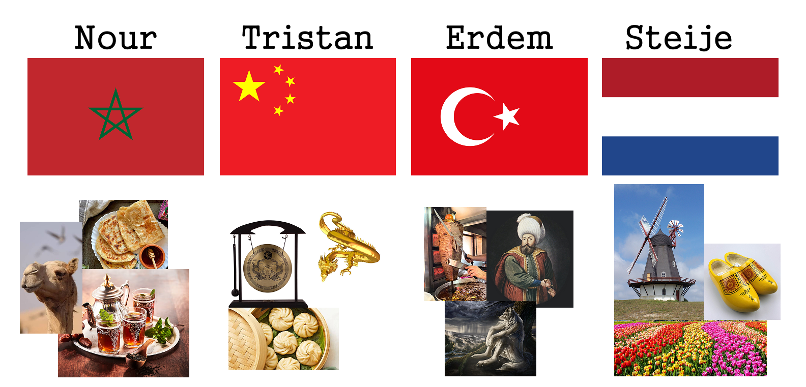

class: center, middle <!-- In deze textarea kan je in Markdown de slides aanpassen, zie https://github.com/gnab/remark/wiki voor alle mogelijkheden! --> <h1 style="background-color:rgba(255, 99, 71, 0.5);">concept presentatie voor de digital garden van Noureddine Chicar</h1> --- # Agenda 1. Mijn digital garden onderwerp 2. 10 inspiratie links 3. 50 afbeeldingen verzameling 5. introtekst --- # Mijn digital garden onderwerp Ik en mijn goonsquad hebben ervoor gekozen om onze digital gardens te maken van onze culturele achtergrond. Mijn site gaat dus veel inspiratie nemen van de Marokkaanse cultuur. <p></p> --- # 10 links Welke 10 links heb je gelezen, geraadpleegd ter inspiratie, verdieping? Wat heb je daaruit gehaald? inspiratie sites: https://neal.fun/deep-sea/ | https://sweet-tape.com/ | https://www.teamfortress.com/mannconomy/| https://www.playdeadlock.com/cityneversleeps | https://melonland.net/ | Onderwerp sites: https://www.visitmorocco.com/en/see-do/nature/infinite-emotions-great-south | https://en.wikipedia.org/wiki/Culture_of_Morocco | https://www.mymoroccanfood.com/all-recipes | https://en.wikipedia.org/wiki/Morocco | https://www.responsibletravel.com/holidays/morocco/travel-guide/the-moroccan-sahara | --- #potentie voor pagina onderwerpen. <img src="50 pics/Tagine.png" alt="Tagine" width="200" height="200"> <img src="50 pics/Mint.png" alt="mint" width="250" height="150"> <img src="50 pics/Msemen.png" alt="Msemen" width="250" height="200"> <img src="50 pics/Football.jpg" alt="football" width="150" height="75"> <img src="50 pics/Football.webp" alt="football" width="150" height="75"> <img src="50 pics/MBC3.png" alt="MBC 3" width="200" height="100"> <img src="50 pics/Hat.png" alt="Hat" width="200" height="125"> <img src="50 pics/Djellaba.png" alt="Djellaba" width="250" height="125"> <img src="50 pics/Clay cup.png" alt="Clay cup" width="250" height="125"> <img src="50 pics/raibi-jamila.jpg" alt="raibi-jamila" width="200" height="100"> <img src="50 pics/Moroccan_dirham-1.jpg" alt="dirhem" width="75" height="100"> <img src="50 pics/Casablanca.png" alt="Casablanca" width="225" height="125"> <img src="50 pics/Chefchaouen.png" alt="Chefchaouen" width="225" height="125"> --- <!-- Slide zonder titel! --> # moodboard Afbeeldingen <img src="50 pics/Sahara.png" alt="Sahara" width="350" height="350"> <img src="50 pics/Style.png" alt="Font and color" width="350" height="350"> <img src="50 pics/Camels.png" alt="camels" width="300" height="350"> <img src="50 pics/Half-hour_sand_glass_MET_ES268.jpg" alt="Hour sound glass" width="100" height="150"> --- # Introtekst Assalamualaikum warahmatullahi wabarakatuh, Welkom bij Noureddine's digitale oasis. Op deze site wil ik graag iets niche delen over het land waar mijn ouders van dan komen. Marokko heeft verschillende onderwerpen die niet snel gedeeld worden met de mensen buiten het land. Als voorbeeld: wat is het verhaal achter Marokkaanse kleipotten en moks? of het verhaal achter de sheshia hoedt? Ik ben van plan om een connected site te bouwen waar de kans groot is dat jij toch iets nieuws kan leren over de Marokkaanse cultuur. <!-- Laat onderstaande staan anders breekt je presentatie -->